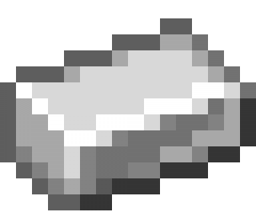

Iron Ingotrocket_launch
The iron ingot is an important metal in Minecraft as it is a raw material for nearly every tech based recipe and many tool recipes. Iron ingots can only be acquired by smelting iron ore blocks inside of a furnace. You can find iron ore in caves, mineshafts, valleys, and mountains. If you are playing vanilla Minecraft you will need coal or charcoal to put into the furnace to smelt the raw ore.